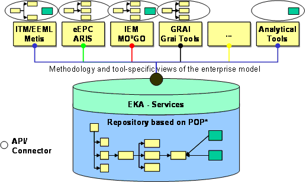
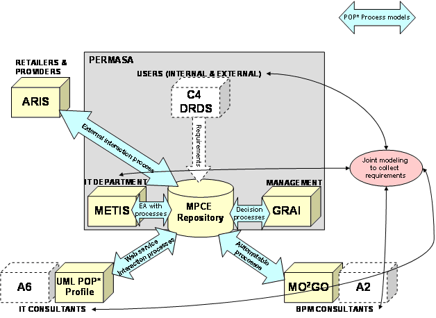

")

Collaborative enterprise modelling
Introduction
Enterprise modelling is a technology that many companies would say they are applying. The application of EM in industry is predominantly for Enterprise Architecture definition and Business Process Management, and the comprehension of what it is and how to use it is linked to consultancy and modelling expertise. Industrial use spans from the definition of business plans to the definition of the ISO 9000 compliant quality system. Many practices are considered as enterprise modelling by the industry.
EM is rapidly developing and transforming into providing visual languages, best-practice patterns and visual knowledge spaces. The new era for EM is driven by the advent of more advanced approaches, methodologies, infrastructures and platforms and a need for families of solutions that allow predictable customisation.
Enterprise Modelling aims to support enterprises by dealing with the several aspects of interoperability:
- Heterogeneity, incommensurable knowledge and information perspectives, systems and software infrastructures, working practices, etc. among the partner companies.
- Need for Flexibility, due to need for innovation, learning, change and exception handling;
- Complexity, the richness and uncertainties of interdependencies within and among partners, their activities, resources, skills and products.
-
Heterogeneity, need for flexibility, and complexity must be managed at different levels:
- Knowledge, approaches, methods and skills needed for innovation, problem solving and work performance, the shared language and frames of reference needed for communication, etc.
- Process, the planning, coordination and management of cooperative and interdependent activities and resources;
- Infrastructure, the information formats, software tools, and interoperability approaches of the participating companies.
However a lot of EM languages and tools are developed in the meantime to support enterprises for defining their own entire architecture. In order to collaborate enterprises have to share their models across modelling languages.
Solution
The POP* language (stands for Process, Organisation, Products and other enterprise dimensions like Systems) defines a core set of enterprise issues to be defined in an enterprise model as a flexible intermediate language to facilitate model exchange between different enterprise modelling tools. The guideline for applying POP* enables companies to share knowledge in a structured way.
The Modelling Platform for collaborative enterprises (MPCE) supports the POP* language and provides model management and model exchange services. The MPCE can be used as a web-service hosted somewhere or can be locally installed. In Figure 11 the conceptual solution is shown.
The major advantage of the POP* concept and the MPCE is the capability to keep models consistent even by using different modelling tools. So modelling elements which do not exist in one tool will be not destroyed to be used in a different tool. POP* had already influenced the work on ISO 19440.

Figure: POP* - EM exchange concept
Involved tools
In alphabetical order
- ARIS – IDS Scheer (Germany)
- GRAITools – ITREC (France)
- METIS – Troux (Texas, USA)
- MO²GO – Fraunhofer IPK (Germany)
- POP* UML Plugin for Rational Rose Software Modeller – ESI (Spain)
Application case
In a furniture supply chain the manual ordering system has to be reengineered. For the first analysis a model was elaborated. But then for the definition and implementation of the to-be scenario some difficulties happen. Stakeholders like the supplier, the IT department, consultants and the enterprise management needs their views and adapted modelling languages for work support. In order to allow the partners to stay in their corner the MPCE was installed as model repository which allows to connect to the different modelling tools. In Figure 12 the architecture is given.

Figure: Application of MPCE and POP* - allow model-based communication between different stakeholders
EM market
The market penetration of EM is about 8% in the US market and 7% in Europe according to Gartner Group, and the EM markets are still perceived and measured as separate markets with approaches, methodologies, tools and solutions separate from the operational enterprise systems and solutions. Most EM projects are performed disjoint from the operational environment and solutions being modelled. So the purpose of EM is mostly for creating improved insight, overview and common understanding across disciplines and processes.
The dominant market in the US is the Enterprise Architecture (EA) Market, while in Europe the EA market is developing rather slowly, but for a few exceptions. In Europe the Business Process Modelling market has so far been the dominant market.